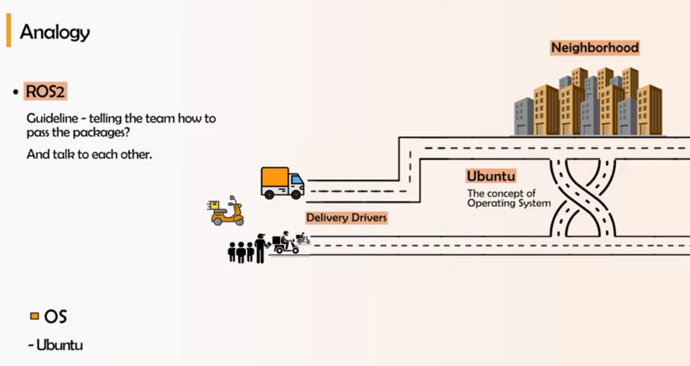
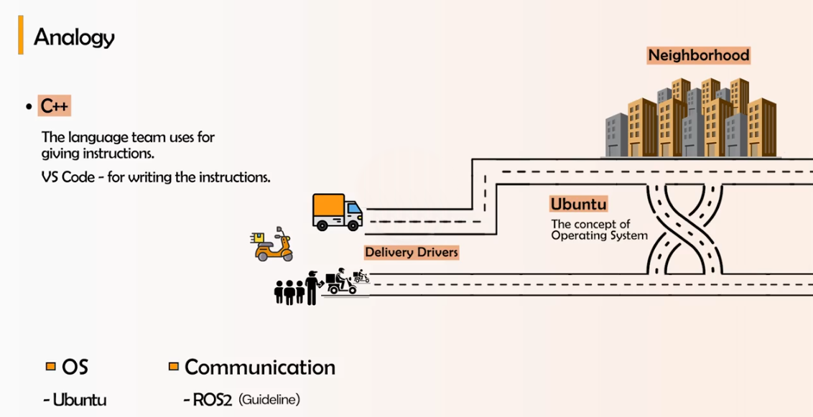
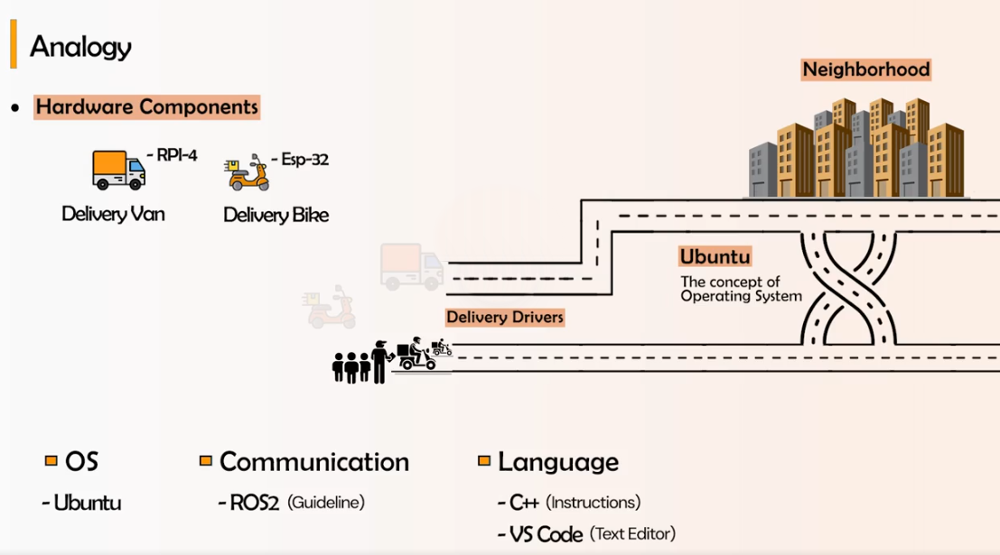
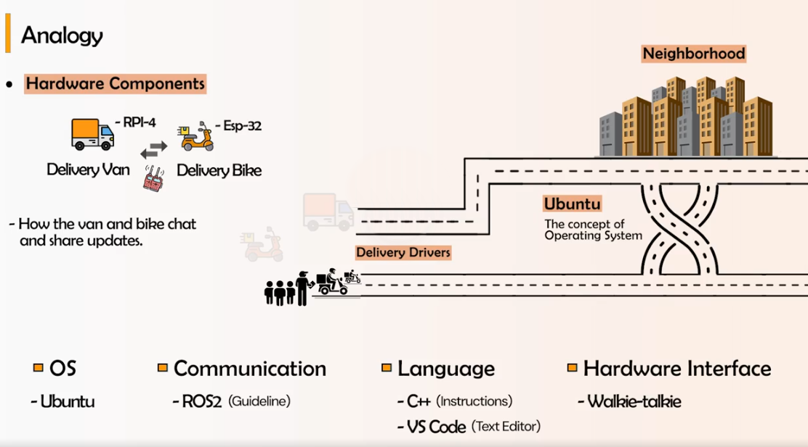

Before you install anything, it helps to have a mental model of how everything inside a robot is connected with one another — which pieces you're about to install today, and how they relate to the hardware pieces you'll meet in later lectures. The whole stack is easier to hold in your head as a single running analogy: a parcel-delivery company.
A robot's software stack is a delivery company. The city and its roads are the operating system everything drives on. The company rulebook for how drivers hand off parcels and talk to each other is ROS 2. The language the dispatchers write instructions in is C++ (or Python), typed into a text editor, VS Code. The vehicles that carry the parcels are the compute boards, and the walkie-talkie they use to stay in sync is the hardware interface.
Every delivery happens somewhere: on roads, between neighborhoods, past intersections. That "somewhere" is the operating system — the ground every other piece runs on. In this course the OS is Ubuntu 22.04 LTS. It manages the disk, memory, networking, and processes so that everything above it can just assume those things work. Sections 1.1–1.4 are entirely about getting this layer in place inside a virtual machine.
A delivery company with no shared procedure is chaos — drivers can't hand parcels to each other and nobody knows who is carrying what. ROS 2 is that shared procedure: the guideline that tells independent programs how to pass data ("packages") around and how to talk to one another, without each one needing to know the others' internal details. It's the middleware layer, and Section 1.5 installs it.

Someone has to actually write the delivery instructions. The language they're written in is C++ (this course also uses Python), and the text editor they're typed into is VS Code. The rulebook (ROS 2) defines how messages move; the language is what you use to spell out the behavior. Section 1.7 installs these tools.

The instructions still need vehicles to run on. In the analogy, a delivery van is a Raspberry Pi 4 — the capable main onboard computer that does the heavy lifting — and a delivery bike is an ESP-32, a small microcontroller sitting right next to the motors and sensors doing fast, simple work. You won't touch these today; they're the focus of the hardware lectures later in the course.

The van and the bike constantly need to chat and share updates — where each one is, what it's carrying, what changed. The walkie-talkie that lets them do that is the hardware interface: the physical link (USB, serial, CAN) plus the driver layer that carries messages between the big computer and the little microcontroller so the rest of the stack sees them as one system.

| Delivery-company piece | Robot stack piece | In this course |
|---|---|---|
| The city, roads, neighborhoods | Operating system | Ubuntu 22.04 LTS — Sections 1.1–1.4 |
| The company rulebook for handing off parcels | Communication middleware | ROS 2 Humble — Section 1.5 |
| The language instructions are written in | Programming language | C++ / Python — Section 1.7 |
| The editor instructions are typed into | Code editor / IDE | VS Code — Section 1.7 |
| Delivery van | Main onboard computer | Raspberry Pi 4 — hardware lectures |
| Delivery bike | Microcontroller near motors/sensors | ESP-32 — hardware lectures |
| Walkie-talkie between van and bike | Hardware interface (link + driver) | USB / serial / CAN — hardware lectures |
Everything from Section 1.1 onward builds the top of this stack — the OS, ROS 2, and the language tools — on a virtual machine, so you have a place to learn it safely before any of it touches a real Raspberry Pi, ESP-32, or LIMO.
Every lecture in this course runs on Ubuntu 22.04 LTS with ROS 2 Humble. Most of you are not sitting in front of a Linux machine right now — you're on Windows, macOS, or a Linux laptop that's already configured for something else entirely. Before we touch a single ROS 2 command, we need a place to safely learn Linux without risking the computer you're reading this on. That place is a virtual machine (VM).
A VM is a complete, isolated computer that runs as a program inside your real computer. It has its own virtual
hard disk, its own virtual network card, its own virtual CPU allocation — and critically, its own operating
system, completely separate from your host OS. If you delete a file you shouldn't have, misconfigure the
network, or run sudo rm -rf on the wrong path (it happens), the damage is contained entirely
inside the VM. Your host machine — your email, your photos, your other work — is untouched.
The single biggest advantage of a VM for this course is the snapshot. Before you install ROS 2, or before you try something risky in a later lecture, you can take a snapshot — a saved freeze-frame of the entire VM's disk and memory state. If anything goes wrong, you revert to the snapshot in under a minute and you're back to a known-good machine. No reinstalling Ubuntu from scratch, no lost afternoon. This turns "I'm afraid to break something" into "let's just try it and see."
A VM also solves three practical problems at once for a classroom of mixed hardware:
| Problem | How the VM solves it |
|---|---|
| Everyone has different hardware/OS | The VM is identical Ubuntu 22.04 for every learner, regardless of whether the host is Windows, macOS, or Linux |
| Fear of breaking the host machine | The VM is fully isolated; worst case, you delete it and create a new one |
| Mistakes are part of learning Linux | Snapshots let you roll back instantly instead of treating every command as high-stakes |
You may have heard of two alternatives, and it's worth knowing why this course doesn't use them:
This course standardizes on VMware specifically because it behaves identically across Windows, macOS, and Linux hosts. Whatever laptop you brought, the instructions in every future lecture — screenshots, keyboard shortcuts, file paths — will match exactly what's on your screen.
This isn't just a teaching crutch — professional robotics teams routinely develop inside VMs or containers for exactly the same reasons: reproducibility across engineers' machines, and the ability to snapshot a known-working environment before an update that might break things. The habits you build this session are the same ones used on real robotics teams.
VMware's desktop hypervisor is free for personal use. Which product you install depends on your host operating system:
| Host OS | Product to install |
|---|---|
| Windows | VMware Workstation Pro (free for personal use) |
| Linux | VMware Workstation Pro (free for personal use) |
| macOS | VMware Fusion Pro (free for personal use) |
On some Windows machines, especially ones that previously had WSL2 or Hyper-V enabled, VMware may warn that it cannot run alongside those features, or the VM may boot extremely slowly. If this happens, open Turn Windows features on or off and disable Hyper-V, Virtual Machine Platform, and Windows Subsystem for Linux, then restart. VMware and Hyper-V-based virtualization generally cannot both claim the CPU's virtualization extensions at the same time.
Once installed, open VMware Workstation Pro or Fusion Pro once just to confirm it launches. You should see an empty library with a "Create a New Virtual Machine" option don't click it yet, we'll do that carefully in the next section.
Now we build the empty computer that Ubuntu will live inside. Open VMware and click Create a New Virtual Machine. This launches the New Virtual Machine Wizard.
LIMO-ROS2-Ubuntu, and note
where it will be stored on disk.
| Resource | VMware default | Recommended minimum for this course |
|---|---|---|
| CPU cores | 1 | 4 or more (leave 1–2 cores free for the host) |
| RAM | ~2 GB | 8 GB or more |
| Disk | 20 GB | 60 GB or more, single file |
| Display / 3D acceleration | Off | Enable "Accelerate 3D graphics" if offered |
If VMware shows an error like "This host supports Intel VT-x, but Intel VT-x is disabled", the VM cannot start because your host machine's CPU virtualization extensions (Intel VT-x on Intel CPUs, AMD-V on AMD CPUs) are turned off in the BIOS/UEFI. To fix it:
F2, Del, Esc, or F10 during boot — the exact key depends on your laptop manufacturer).This is the single most common reason a brand-new VM fails to start, especially on corporate or newly-purchased laptops where virtualization ships disabled by default.
Create the VM as described above, but do not power it on yet. Open the VM's settings afterward and confirm: it has at least 4 CPU cores, at least 8 GB of RAM, and a single-file virtual disk of at least 60 GB. Write down the exact numbers you chose — you'll want them if you ever need to explain your setup to an instructor.
With the empty VM created, we now need an operating system to put inside it. This course uses Ubuntu 22.04 LTS ("Jammy Jellyfish") specifically, because it's the officially supported platform for ROS 2 Humble. A newer Ubuntu version will not work correctly with Humble's binary packages — don't be tempted to grab the latest Ubuntu release.
The words "erase disk" are alarming, but remember: this disk is the virtual disk file we created inside VMware in the previous section, not your host machine's real hard drive. Nothing on your Windows, macOS, or host Linux install is touched. If you're ever unsure whether you're inside the VM, look for the VMware window border and the VM's own taskbar/desktop — that's your visual confirmation.
sudo throughout this course.You should land on the Ubuntu desktop and log in with the password you set.
Right now the VM's display is small, the mouse may feel sluggish crossing the window edge, and copy-paste
between your host and the VM doesn't work. All of this is fixed by installing the guest tools. Open a
terminal inside the Ubuntu VM (Ctrl+Alt+T) and run:
open-vm-tools and open-vm-tools-desktop give the VM proper video drivers, shared
clipboard, drag-and-drop, automatic display resizing, and — most importantly for this course —
significantly better 3D graphics passthrough. Gazebo and RViz2 render live 3D scenes constantly; without
VMware Tools installed, they can drop to a slideshow of a couple of frames per second, even on a powerful
host machine. If a later lecture's simulation feels unusably slow, this is almost always the first thing
to check.
After the reboot, try resizing the VMware window — the Ubuntu desktop resolution should now follow it automatically, and copying text between host and guest should work in both directions.
With Ubuntu 22.04 running smoothly, we can now install ROS 2 Humble Hawksbill — the middleware that every remaining lecture in this course builds on. We'll follow the official, currently documented Debian package install path. Open a terminal and work through each step in order; don't skip ahead, since later steps depend on earlier ones succeeding.
ROS 2's command-line tools assume a UTF-8 locale. Most fresh Ubuntu installs already have this, but we set it explicitly to be safe:
ROS 2's dependencies live partly in Ubuntu's Universe repository, which isn't always enabled by default:
sudo apt install software-properties-common -y
sudo add-apt-repository universe
ROS 2 packages aren't in Ubuntu's default repositories, so we add ROS's own apt source. The current
recommended method installs a small .deb package (from the ros2/ros2-apt-source
releases on GitHub) that registers the correct repository and signing key for your exact Ubuntu codename
automatically:
That .deb file didn't install any robotics software itself — it only dropped an entry into
/etc/apt/sources.list.d/ pointing at ROS 2's package server, plus the GPG signing key apt uses
to verify those packages haven't been tampered with. This is the same mechanism Ubuntu itself uses for
third-party software like Docker or VS Code: register a trusted source once, then apt install
works normally afterward.
sudo apt update
sudo apt upgrade -y
sudo apt install ros-humble-desktop -y
sudo apt install ros-dev-tools -yThis will download a substantial amount of software (well over a gigabyte) — RViz2, demo nodes, simulation bridges, rqt tools, and the full client libraries. Expect this step to take 15–30 minutes depending on your connection and the VM's allocated resources.
| Package | Contains | When to use it |
|---|---|---|
ros-humble-desktop | Core ROS 2, RViz2, demos, rqt, common simulation tooling | Development machines, this course, anywhere with a display |
ros-base (ros-humble-ros-base) | Core ROS 2 client libraries and CLI tools only — no GUI tools | Headless robots, embedded computers, production deployments |
ros-dev-tools | colcon, rosdep, testing and linting utilities | Anywhere you build ROS 2 packages from source, like this course |
We install the full desktop variant because this course leans heavily on visual tools — Gazebo
simulation, RViz2 visualization, rqt graphs. A real LIMO robot's onboard computer, by contrast, often runs the
slimmer headless base variant, since it has no monitor attached and every megabyte of RAM matters.
While we're installing packages, grab two more you'll need starting in Lecture 4 to move LIMO's joints by
hand in RViz2 and inspect its URDF — joint-state-publisher and its GUI slider companion:
sudo apt update
sudo apt install ros-humble-joint-state-publisher ros-humble-joint-state-publisher-gui -y
ROS 2's commands aren't on your PATH until you "source" its setup script. Doing this by hand in
every terminal gets old fast, so we append it to your shell's startup file, ~/.bashrc, so it runs
automatically:
echo "source /opt/ros/humble/setup.bash" >> ~/.bashrc
source ~/.bashrcsource Once
Running source /opt/ros/humble/setup.bash by itself only affects the current terminal
window. Close it, open a new one, and ROS 2 commands vanish again ("command not found: ros2"). The
echo ... >> ~/.bashrc line above is what makes it permanent — it writes that source command
into the file bash reads every time a new terminal starts.
Open a brand-new terminal window (not one left over from earlier) and run tail -n 3 ~/.bashrc.
Confirm you can see the source /opt/ros/humble/setup.bash line at the bottom. Then run
which ros2 and note the file path it prints.
Before we build anything of our own, let's prove ROS 2 itself actually works end-to-end using two of its built-in demo nodes: a C++ talker that publishes a counting message, and a Python listener that receives it. If two independent processes, written in two different languages, can find each other and exchange messages with zero configuration, the install is healthy.
Open two separate terminal windows.
If Terminal 2 is printing "I heard" for each message Terminal 1 publishes, ROS 2's discovery and messaging
layer is working correctly — the two nodes found each other automatically over the network layer with no IP
addresses or ports configured by hand. Press Ctrl+C in both terminals to stop them.
Two additional one-line commands are worth keeping in your back pocket for the rest of this course:
printenv ROS_DISTRO
# should print: humble
ros2 doctor
# runs a battery of environment checks and reports warnings/errors
ros2 doctor is especially useful weeks from now if something that used to work suddenly
doesn't — run it first before deep-diving into a mystery bug.
Before setting up the workspace, let's install the terminal, Python tooling, and code editor you'll use for the rest of this course.
Terminator lets you split a single window into multiple panes — handy for running a talker and
listener, a launch file, and ros2 topic echo side by side without juggling separate
windows.
Several tools and exercises in this course install Python packages with pip, so let's get it in
place now.
Install VS Code via its official snap package:
Then open VS Code, go to the Extensions panel (Ctrl+Shift+X), and install these three extensions:
CMakeLists.txt, which every ROS 2 C++ package uses
ROS 2 itself is installed system-wide under /opt/ros/humble, but the code we write and build for
this course — including LIMO's own packages — lives in a separate workspace we control. Let's
set that up now, along with the tools that build and manage it.
sudo apt install python3-colcon-common-extensions python3-rosdep -y
sudo rosdep init
rosdep update
colcon is the build tool that compiles every ROS 2 package in a workspace. rosdep
is a dependency resolver — it reads each package's declared dependencies and installs the matching system
packages (drivers, libraries, other ROS packages) automatically instead of you hunting them down one by one.
mkdir -p ~/limo_ws/src
cd ~/limo_ws/src
git clone <course-workspace-url-from-your-instructor> .
Your instructor will provide the exact repository URL for this course's LIMO packages (simulation models,
description files, teleop configs, and the lecture exercise packages you'll extend in later sessions). Clone
it directly into ~/limo_ws/src.
cd ~/limo_ws
rosdep install --from-paths src --ignore-src -r -y
This one command reads every package in src/ and installs whatever it needs system-wide —
typically including gazebo_ros, gazebo_plugins, xacro,
rviz2, joint-state-publisher, joint-state-publisher-gui, and
teleop-twist-keyboard for a LIMO workspace. Depending on what's already installed, this can take
anywhere from a few seconds to several minutes.
The --symlink-install flag is worth using by habit: instead of copying every file into
install/, it links back to your src/ files where possible, so editing a Python
script or a launch file often takes effect immediately without a full rebuild.
Just like with /opt/ros/humble/setup.bash, we want ~/limo_ws sourced in every new
terminal — but guarded, so it doesn't error out on a machine where the workspace hasn't been built yet:
echo 'if [ -f ~/limo_ws/install/setup.bash ]; then source ~/limo_ws/install/setup.bash; fi' >> ~/.bashrc
source ~/.bashrc
Your workspace's source line must come after the /opt/ros/humble/setup.bash line you
added in Section 1.5. ROS 2's package overlay system expects the base install to be sourced first, then your
workspace layered on top of it. If you run tail -n 5 ~/.bashrc and the order looks reversed,
edit the file (e.g. nano ~/.bashrc) and fix it by hand.
Run colcon build --symlink-install a second time from ~/limo_ws with nothing
changed. Notice it finishes much faster than the first build. Then run ros2 pkg list | grep limo
and confirm your cloned LIMO packages appear in the list.
Let's finish this session by seeing LIMO move — in simulation, using the differential-drive model. You don't need to understand every piece of this yet; Lecture 2 walks through ROS 2's architecture and this exact launch file in full detail. For now, this is just proof that everything you installed today actually works together.
Gazebo should open a window showing an empty world with the LIMO model — a small four-wheeled robot with a LiDAR puck and camera mounted up front — sitting in the middle. Leave this terminal running.
Seeing /cmd_vel (velocity commands in), /odom (odometry out), and
/scan (LiDAR data) confirms the simulated robot is fully wired into ROS 2, just like a physical
LIMO would be.
ros2 run teleop_twist_keyboard teleop_twist_keyboard
This opens an interactive keyboard controller in the terminal — the on-screen legend maps keys like
i, ,, j, l to forward, backward, and turning. Try driving
LIMO a small circle in the Gazebo window and watch it respond. Press k to stop, then
Ctrl+C to exit the teleop node, and Ctrl+C in the launch terminal to close Gazebo.
With Gazebo and teleop both running, open a third terminal (or a third Terminator pane) and run
ros2 topic echo /odom while you drive LIMO forward a short distance with the keyboard. Watch
the position values change in the message stream, then stop and note roughly how far the position field
moved for a few seconds of "forward" key presses.
In one session, you went from a bare host laptop to a fully working Linux robotics workstation: a VMware virtual machine running Ubuntu 22.04 LTS, ROS 2 Humble installed and sourced automatically, a colcon-built LIMO workspace, and — as proof it all works — a simulated LIMO you drove around in Gazebo. Every lecture from here on assumes this exact environment is ready to go.
Everything downstream depends on this environment being solid. Lecture 2 opens by explaining exactly what
you just launched — nodes, topics, and the ROS 2 computation graph — using the very talker/
listener pair and LIMO Gazebo session from this lecture as its running examples. If any step in
this session felt shaky, it's worth repeating before moving on; a wobbly foundation here makes every later
lecture harder to debug.
apt install, apt update, and apt upgrade.~/limo_ws) containing a src/ directory of ROS 2 packages plus the build/, install/, and log/ folders colcon generates.src/ folder.source /opt/ros/humble/setup.bash) so the current shell knows where ROS 2 commands and packages live; must happen in every new terminal unless added to ~/.bashrc.setup.bash in a new terminal, then being confused why ros2 commands "stopped working" — always check with echo $ROS_DISTRO first.ros-humble-desktop install or a colcon build.open-vm-tools, then wondering why Gazebo crawls along at two or three frames per second.